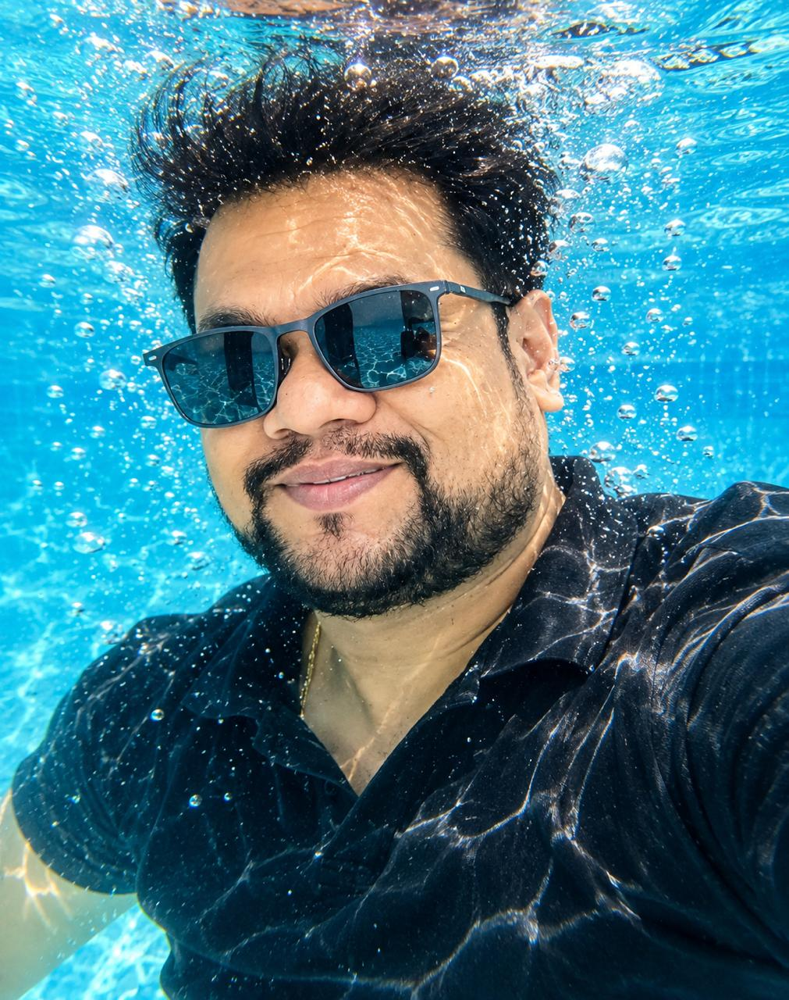

3D BATHYMETRIC GLOBE
GLOBAL ORBIT
ALL MARITIME SECTORS
DEPTH: -42.0m
REGULATORS: EAD • MME/ASHGHAL • MOEF/CRZ • WORLD BANK

ID // MARINE-ENV-LEAD-01
PH.D. MARINE BIOGEOCHEMISTRY
ENGLISH • TAMIL
DR. NIRMAL RAJKUMAR
SENIOR ENVIRONMENT EXPERT (MARINE)
Senior marine & environmental specialist with 25+ years of leadership across UAE, Qatar, Bahrain, KSA, and India. Proven authority in marine EIAs/PERs, statutory NOCs (EAD, MME, Ashghal, MoEF/CRZ), dredging & reclamation compliance, hydrodynamic/plume assessments, CEMP, and offshore HSEIA for landmark ports, ecological islands, and energy megaprojects.
STATUTORY AUTHORITY & LENDER CLEARANCE MATRIX (CLICK TO FILTER PROJECTS):
25+
Years Experience
36+
Landmark Projects
5
Countries (GCC & IND)
Ph.D.
Biogeochemistry
AI VOICE BRIEFING DECK
STANDBY
01 // Executive Profile
Select any of the 6 executive briefing chapters or customize voice speed:
ACOUSTIC SPECTRUM
CH 01 / 06
01 // Executive Profile
LIVE KARAOKE SYNC
CHRONOLOGICAL MISSION LOG // 2001–PRESENT
CAREER TRAJECTORY
ACTIVE SECTOR: ALL REGIONS (7 ROLES)
GEOSPATIAL & INFRASTRUCTURE ARCHIVE
PROJECT MATRIX
DISPLAYING 6 OF 36 PROJECTS
CAPABILITY DIAGNOSTICS // 9 CORE VECTORS
CORE COMPETENCIES RADAR
9-AXIS SPIDER MESH
SELECT NODE
Click any perimeter vertex or module card to inspect vector scope
ACADEMIC FOUNDATION
VERIFIED DEGREES
EDUCATION & ACADEMIC CREDENTIALS
2008 // DOCTORAL
Ph.D.
Doctor of Philosophy (Ph.D.)
Marine Biogeochemistry, Anna University, Chennai
DISCIPLINE: MARINE BIOGEOCHEMISTRY
1998 // POSTGRADUATE
M.Sc.
Master of Science (M.Sc.)
Postgraduate Science Degree
CONFERRED: 1998
1995 // UNDERGRADUATE
B.Sc.
Bachelor of Science (B.Sc.)
Undergraduate Science Degree
CONFERRED: 1995